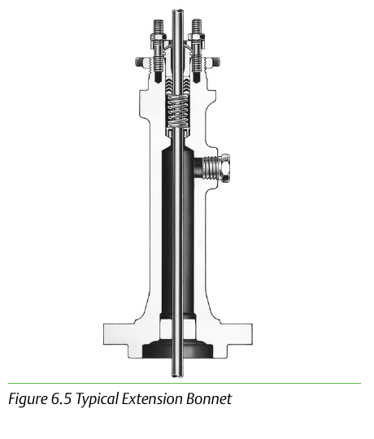

Cryogenic Extension Bonnets

- 1Keeps the packing box above -101°C/-150°F
- 2Below that, atmospheric moisture freezes on the stem and packing and tears it
- 3Bonnet length is set by how far the packing box must sit from the process to stay above that number
Control Valve Handbook, 6th ed., Fig. 6.5. Component Index: cvh-cmp-cryogenic-extension-bonnet.